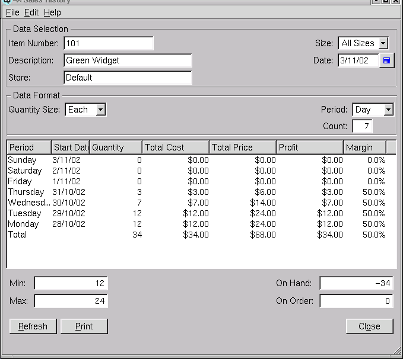
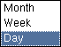

Sales History
The sales history window is used to view the sales history of an
item for a specified period of time.

Data Selection
Use this section to select the item, size and store for the sales
history you wish to view.
Item Number
The item number of the item to view.
Description
Quasar displays the description of the item.
Size
You may view the sales of all sizes or the sales of an individual
size. Select "All" or select the individual size.
Store
You may view the sales of all stores or you may enter a
store to view.
Date
The ending date of the sales history to view.
Data Format
In this section define the format in which you wish to view the
sales history.
Quantity Size
In Quasar an item may have multiple sizes. For example, a soft drink
may be sold as a case of 12, or as an individual bottle. Whether you
sold them as cases or bottles you may view the sales history as if the
sales were in either size. This feature is particularily useful if you
purchase a product in a different size than you sell it and wish to
view sales by the purchasing size.
Period
Select the period to view. The period to view may be expressed in
months, weeks or days.

Count
The count attribute works in conjunction with the period
attribute. Enter the number of periods that you wish to view. For
example, if you select the period "Month" and enter "6" as the count
then 6 months of sales history will be displayed as a total of each of
the last 6 months.
History Table
-
- Period - If sales history is being displayed by month, then
the start date of the month will be displayed. If the sales history is
being displayed by week then the week number will be displayed. If
sales history is being displayed by day then the day of the week is
displayed.
- Start Date - The start date of the period.
- Quantity - The total quantity of all sales of the item
during the period.
- Total Cost - The total cost of all sales of the item during
the period.
- Total Price - The total selling price, attained on the
sales of the item, during the period.
- Profit - The gross profit margin for the item, attained on
sales during the period.
- Margin - The gross margin of profit for the item, attained
on sales during the period, expressed as a percentage.
Refresh
Clicking on refresh will refresh the data on the screen.
Print
Select this function to print the contents of the sales history to
the printer.